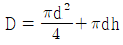
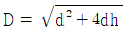

사출(프레스)금형산업기사 (2014-03-02 기출문제)
1과목: 금형설계
1. 블랭킹가공 또는 피어싱가공시 다이구멍에서 블랭크 또는 스크랩의 낙하를 잘되게 하려면 어떻게 해야 하는가?
- 구멍 내면의 연마
- 여유각 설치
- 펀칭유 도포
- 스트리퍼 설치
(정답률: 85%)

2. 프로그레시브 가공과 같이 연속가공을 하는 공정 중에 다이의 수명과 다이의 수정을 필요로 할 때 가공하지 않고 쉬는 공정을 설치하여야 한다. 이를 무엇이라고 하는가?
- 사이드 컷
- 스페이서 블록
- 핑거스톱
- 아이들
(정답률: 75%)
3. 금형에서 피어싱 가공을 할 경우 버(Burr) 방향은 어느 곳에 발생하는가?(문제 오류로 정답이 정확하지 않습니다. 정답지를 찾지못하여 임의 정답 1번으로 설정하였습니다. 정답을 아시는 분께서는 오류 신고를 통하여 정답 입력 부탁 드립니다.)
- 제품의 상면
- 제품의 하면
- 제품의 상하면
- 제품의 중간면
(정답률: 27%)
4. 다음 중 볼 슬라이드 다이세트의 특징이 아닌 것은?
- 고속운전에도 발열이 적어 눌러 붙지 않는다.
- 마모가 많고, 초기의 정도를 장시간 유지할 수 없다.
- 부시와 포스트 사이는 볼 직경보다 약간 작으므로 흔들림이 적고, 정도가 요구되는 금형에 사용된다.
- 대형 다이세트인 경우 취급이 용이하다.
(정답률: 55%)
5. 판 두께 0.5mm인 규소강판에 가로세로 각각 20mm의 사각 구멍을 블랭킹 하는 경우의 최대 전단하중(kgf)은 약 얼마인가? (단, 규소강판의 전단저항은 45 kgf/mm2, 전단각은 무시한다.)
- 900 kgf
- 1800 kgf
- 3600 kgf
- 9000 kgf
(정답률: 56%)
6. 드로잉 작업에서 블랭크의 지름 D, 성형품의 지름 d, 성형품의 높이 h, 밑 바닥부의 구석 r은 없는 것으로 표시할 때 블랭크지름 D 을 구하는 식으로 옳은 것은?
- D = πd2 + πdh

- D = d2 + 4dh – 1.72d

(정답률: 73%)
7. 다음 중 다이(Die)의 분할 방법으로 올바르지 못한 것은?
- 국부적인 요철이 있어야 한다.
- 각형, 원형, 직선 형상으로 한다.
- 연삭 작업이 용이해야 한다.
- 치수측정이 쉬워야 한다.
(정답률: 74%)
8. 펀치 바깥쪽의 누름면에 삼각형의 돌기를 설치하여 고운 전단면을 얻고, 휨과 거스러미가 없는 제품을 얻기 위한 가공은?
- 파인블랭킹
- 하이드로포밍
- 디프드로잉
- 하프블랭킹
(정답률: 73%)
9. 다음은 가동식 스트리퍼의 우수한 점을 설명하였다. 관계가 없는 것은?
- 작업성이 좋다.
- 정밀도가 높고 성형품의 가치가 높아진다.
- 다이수명이 길어진다.
- 두꺼운 판의 싱글 펀칭다이나 소량용 펀칭다이에 적합하다.
(정답률: 58%)
10. 프레스에서 슬라이드 조절을 상한값으로 한 상태에서 스트로크를 하사점까지 내렸을 때 슬라이드 하면과 볼스터 상면의 거리를 무엇이라 하는가?
- 슬라이드 조절량
- 셧 하이트
- 다이 하이트
- 슬라이드의 스트로크
(정답률: 75%)
11. 사출성형기의 일반적인 동작순서로 알맞은 것은?
- 금형 닫힘 → 사출 → 냉각 →금형 열림 → 성형품 밀어내기 → 금형 닫힘
- 금형 닫힘 → 냉각 → 사출 → 성형품 밀어내기 → 금형 열림 → 금형 닫힘
- 금형 닫힘 → 금형 열림 → 냉각 → 사출 → 성형품 밀어내기 → 금형 닫힘
- 금형 닫힘 → 금형 열림 → 성형품 밀어내기 → 냉각 → 사출 → 금형 닫힘
(정답률: 79%)
12. 다음 중 로킹 블록의 기능을 가장 잘 설명한 것은?
- 사이드코어의 전진을 하도록 한다.
- 이젝팅 플레이트의 복귀를 가능토록 한다.
- 고정측 형판과 가동측 형판을 일정한 힘으로 고정시켜 금형의 형개의 순서를 조정한다.
- 수지압력에 의해 슬라이드코어가 후퇴하는 것을 방지 시켜 준다.
(정답률: 67%)
13. 성형수축률은 1보다 매우 작기 때문에 다음과 같은 근사식을 사용하여 설계시 적용한다. 올바른 것은?
- 상온금형 치수 ≒ 상온성형품 치수(1+성형수축률)
- 상온금형 치수 ≒ 상온성형품 치수(1-성형수축률)
- 상온금형 치수 ≒ 성형온도시 금형 치수(1-성형수축률)
- 상온금형 치수 ≒ 성형온도시 금형 치수(1+성형수축률)
(정답률: 72%)
14. 다음 중 스프루 부시의 설계시 고려할 사항으로 틀린 것은?
- 스프루 부시 반지름은 노즐 선단 반지름보다 0.5 ~ 1mm 정도 크게 한다.
- 스프루 입구 지름은 노즐 구멍 지름보다 1.5 ~ 2mm정도 작게 한다.
- 스프루 구멍의 테이퍼는 2° ~ 4° 로 한다.
- 스프루 길이는 가능한 짧게 한다.
(정답률: 35%)
15. 압축성형(Compression Mold)에 주로 사용되는 수지로서, 열과 압력을 가하면 화학적 변화로 영구적인 형태로 굳어지는 수지를 무엇이라 하는가?
- 열가소성 수지
- 열경화성 수지
- 결정성 수지
- 비결정성 수지
(정답률: 23%)
16. 사출금형설계 전에 고려할 사항과 가장 거리가 먼 항목은?
- 성형 사이클이 짧은 금형 구조로 할 것
- 2차 가공이 적도록 할 것
- 제작기간이 길더라도 제작비가 싼 구조로 할 것
- 내구성이 있는 구조로 할 것
(정답률: 84%)
17. 성형재료 PS(폴리스티렌)로 살두께 2mm인 성형품을 만들기 위한 금형을 제작하려고 한다. 이 때 표준게이트를 사용한다면 게이트 깊이 h는 얼마인가? (단, 수지상수 n = 0.6이다.)
- 0.5mm
- 1.2mm
- 1.6mm
- 2.2mm
(정답률: 73%)
18. 성형품의 전 둘레를 파팅 라인에 두고 균일하게 밀어내므로 살 두께가 얇거나 성형품 깊이가 깊은 경우에 사용되는 이젝팅 방법은?
- 공기압에 의한 밀어내기
- 이젝트 핀에 의한 밀어내기
- 스트리퍼 플레이트에 의한 밀어내기
- 슬리브 핀에 의한 밀어내기
(정답률: 23%)
19. 성형품 설계시 성형품의 장식, 보강, 얇은 두꼐로 강도를 증가하기 위한 적합한 방법은?(문제 오류로 정답이 정확하지 않습니다. 정답지를 찾지못하여 임의 정답 1번으로 설정하였습니다. 정답을 아시는 분께서는 오류 신고를 통하여 정답 입력 부탁 드립니다.)
- 성형품 평면에 보스를 설치한다.
- 성형품 두께를 불규칙하게 변화시킨다.
- 성형품에 리브를 설치한다.
- 성형품에 단을 많이 설치한다.
(정답률: 29%)
20. 다음 중 이젝트 플레이트에 장착되어 있지 않은 것은?
- 스프루 로크 핀
- 스톱 핀
- 이젝트 핀
- 리턴 핀
(정답률: 69%)
2과목: 기계가공법 및 안전관리
21. 공작기계에서의 일반적인 안전수칙으로 틀린 것은?
- 정전시 이송장치를 풀어두고 스위치 조작은 삼가한다.
- 연속으로 생성되는 칩은 칩 제거용 기구를 사용하여 제거한다.
- 작업 전, 작업 중, 작업 후 기계의 상태를 살펴 이상 유무를 점검한다.
- 회전하는 부분을 맨손으로 점검하는 것을 위험하므로 장갑을 착용 후 점검한다.
(정답률: 73%)
22. 다음 중 방전가공법에 대한 설명으로 틀린 것은?
- 경도가 높은 초경합금에는 적용이 곤란하다.
- 가공부분에 변질층이 남는다.
- 전극 재료는 구리, 그래파이트, 은-텅스텐합금이 등이 사용된다.
- 전극 및 공작물에 큰 힘이 가해지지 않는다.
(정답률: 37%)
23. 다음 중 치공구 설계의 목적이 아닌 것은?
- 복잡한 부품의 경제적인 생산
- 근로자의 숙련도 요구 증가
- 공정단축 및 검사의 단순화와 검사시간 단축
- 부적합한 사용을 방지할 수 있는 방오법(Fool-proof)이 가능
(정답률: 85%)
24. 기계가공을 하여 제품을 생산하는 경우보다 제품 생산시 금형을 사용함으로써 얻을 수 있는 장점과 거리가 먼 것은?
- 제품의 생산 원가를 줄일 수 있다.
- 특수기술이나 숙련기술이 있어야 제품을 만들 수 있다.
- 제품의 생산 시간이 단축된다.
- 컴퓨터 등 자동화시스템을 이용하여 무인생산 공장운영도 가능하다.
(정답률: 79%)
25. 재료에 외력을 가하면 변형이 생기는데 이 변형이 외력을 제거해도 복귀되지 않는 변형은 무엇인가?
- 소성 변형
- 탄성 변형
- 자유 변형
- 형 변형
(정답률: 79%)
26. 절삭작업에서 구성인선(Built up edge)을 방지하기 위한 설명 중 틀린 것은?
- 경사각을 크게 한다.
- 절삭속도를 크게 한다.
- 바이트의 날에 절삭제를 주입한다.
- 절삭 깊이를 크게 한다.
(정답률: 81%)
27. 원통형이나 6~8각형의 상자 속에 공작물과 연마제 등을 넣고 회전시켜 요철부분을 제거하여 매끈한 가공면을 얻는 가공법은?
- 폴리싱
- 버니싱
- 호닝
- 배럴가공
(정답률: 79%)
28. 다음 중 초음파 가공의 특징이 아닌 것은?
- 유리, 수정, 루비, 다이아몬드, 열처리 강 등의 재료를 가공할 수 있다.
- 굴곡 구멍가공, 얇은판 절단, 성형, 표면 다듬, 조각 등의 가공이 가능하다.
- 소성변형이 되지 않고 취성이 큰 재료를 가공할 수 없다.
- 가공물 표면에 공구를 가볍게 눌러 가공하는 간단한 조작으로 숙련을 필요치 않는다.
(정답률: 45%)
29. 다음 중 금형에 표면처리를 하는 목적이 아닌 것은?
- 내마멸성 증가
- 내충격성 증가
- 윤활성 감소
- 금형강도 증가
(정답률: 78%)
30. 선반에서 직경 40mm의 환봉을 30m/min의 절삭 속도로 절삭할 때 회전수는?
- 239rpm
- 276rpm
- 293rpm
- 315rpm
(정답률: 79%)
31. 다음 중 금형의 설치시 점검 사항이 아닌 것은?
- 녹아웃 장치의 고정상태
- 이젝터의 작동상태
- 가공제품의 치수정도
- 안내판과 부시의 조립상태
(정답률: 67%)
32. 높은 정밀도를 요구하는 가공물, 각종지그, 정밀기계의 구멍가공 등에 사용하는 보링머신은?
- 수평 보링머신
- 지그 보링머신
- 보통 보링머신
- 수직 보링머신
(정답률: 84%)
33. 프레스 가공의 분류 방법 중에서 전단가공이 아닌 것은?
- 트리밍
- 블랭킹
- 피어싱
- 엠보싱
(정답률: 67%)
34. 드릴가공을 하기 위한 펀치 작업을 하고자 할 때 사용하는 펀치는?
- 핀 펀치
- 도팅 펀치
- 프릭 펀치
- 센터 펀치
(정답률: 81%)
35. 래핑(lapping)작업은 어떤 현상을 기계가공에 응용한 것인가?
- 충격현상
- 마모현상
- 압축현상
- 부식현상
(정답률: 64%)
36. 주철, 황동, 경합금, 초경합금을 연삭할 때 적합한 연삭 숫돌은?
- AL입자 연삭숫돌
- WA입자 연삭숫돌
- GC입자 연삭숫돌
- A입자 연삭숫돌
(정답률: 71%)
37. M10×1.5인 미터 보통 나사를 가공하기 위한 드릴의 지름으로 가장 적합한 것은?
- 7.0 mm
- 7.5 mm
- 8.5 mm
- 9.5 mm
(정답률: 85%)
38. 전기도금의 반대 현상으로 가공물을 양극(+), 전기저항이 적은 구리, 아연을 음극(-)으로 연결하고, 전기에 의한 화학적인 작용으로 가공물의 표면이 용출되어 필요한 형상으로 가공하는 방법으로 거울면과 같이 광택이 있는 가공면을 비교적 쉽게 얻을 수 있는 가공법은?
- 전해연삭
- 전해연마
- 전주가공
- 방전가공
(정답률: 58%)
39. 머시닝센터 프로그램에 사용되는 준비 기능에 있어서 공구지름 보정취소 기능은?
- G41
- G42
- G43
- G40
(정답률: 73%)
40. 다음 중 센터리스 연삭기의 특징이 아닌 것은?
- 중공물의 원통연삭에 편리하다.
- 대형이나 중량물의 연삭은 불가능하다.
- 긴 홈이 있는 가공물의 연삭작업이 가능하다.
- 연삭숫돌 바퀴의 폭이 크므로 지름의 마멸이 적고, 수명이 길다.
(정답률: 41%)
3과목: 금형재료 및 정밀계측
41. 표면거칠기 Ra 측정시 기준길이 0.8mm 설정에 대한 평가길이는?(문제 오류로 정답이 정확하지 않습니다. 정답지를 찾지못하여 임의 정답 1번으로 설정하였습니다. 정답을 아시는 분께서는 오류 신고를 통하여 정답 입력 부탁 드립니다.)
- 0.4mm
- 1.25mm
- 4.0mm
- 12.5mm
(정답률: 58%)
42. 표준온도 20℃에서 200mm의 강재 게이지블록을 손으로 만져 21℃가 되었을 때, 게이지블록에 생기는 오차는 약 몇 μm 인가? (단, 강의 열팽창계수는 11.5×10-6/℃ 이다.)(문제 오류로 정답이 정확하지 않습니다. 정답지를 찾지못하여 임의 정답 1번으로 설정하였습니다. 정답을 아시는 분께서는 오류 신고를 통하여 정답 입력 부탁 드립니다.)
- 11.5
- 1.15
- 23.0
- 2.30
(정답률: 40%)
43. 한계게이지의 단점에 해당되는 것은?
- 각 치수마다 게이지가 각각 필요하다.
- 조작이 복잡하고 경험이 필요하다.
- 제품 사이의 호환성이 없다.
- 분업방식을 취할 수 없다.
(정답률: 58%)
44. 감도가 0.02mm/m인 수준기의 눈금선 간격이 2mm 인 경우 이 수준기의 곡률 반경은 약 몇 m 인가?
- 84
- 103
- 235
- 362
(정답률: 46%)
45. 마이크로미터의 스핀들 피치는 0.5mm이고, 딤블의 원주를 100등분 하였다면 최소 읽기 값(mm)은?
- 0.⑤
- 0.0⑤
- 0.01
- 0.001
(정답률: 25%)
46. 측정기의 관리를 잘하기 위한 보관방법에 대한 설명으로 가장 올바른 것은?(문제 오류로 정답이 정확하지 않습니다. 정답지를 찾지못하여 임의 정답 1번으로 설정하였습니다. 정답을 아시는 분께서는 오류 신고를 통하여 정답 입력 부탁 드립니다.)
- 온도변화가 적고 습도가 낮은 장소에 보관한다.
- 습도는 상대습도 70% 전후가 가장 적합하다.
- 사용 후에는 반드시 유지성 방청유로 모든 측정기를 방청 처리하여 보관한다.
- 광학측정기의 렌즈는 코팅이 상하지 않도록 비유지성 방청유로 방청 처리하여 보관한다.
(정답률: 37%)
47. 한 쌍의 기어를 백래시 없이 맞물리고 회전시켰을 때 중심거리 변화를 측정하여 기록하는 시험은?
- 편측 잇면 물림시험
- 양측 잇면 물림시험
- 기초원판식 시험
- 기초원 조절방식 시험
(정답률: 73%)
48. 전기 마이크로미터의 장점이 아닌 것은?
- 전기적 노이즈에 영향을 받지 않아 안정적이다.
- 디지털 표시가 쉽다.
- 릴레이 신호발생이 쉽다.
- 높은 배율을 얻을 수 있다.
(정답률: 80%)
49. 다음 기하 공차 중 관련 형체의 위치 공차는?
- 원통도 공차
- 진직도 공차
- 동심도 공차
- 직각도 공차
(정답률: 74%)
50. 다음 중 게이지블록의 밀착력과 가장 관계있는 것은?
- 측정면의 평면도
- 측정면의 경도
- 치수 오차
- 측정면의 평행도
(정답률: 77%)
51. 가공용 알루미늄합금의 분류가 잘못된 것은?
- Al-Mn 합금 : 가공성이 좋아 건축용, 식기 등에 사용된다.
- Al-Mg 합금 : 내식성이 뛰어나고 선박, 차량, 건축용에 사용된다.
- Al-Mg-Si 합금 : 내식성과 가공성이 우수하여 압출재, 판재 등에 이용된다.
- Al-Zn-Mg 합금 : 가공경화용 합금으로서 하중이 적게 걸리는 건축용으로 사용된다.
(정답률: 60%)
52. 철-탄소 상태도에서 {γ}고용체 → {α}고용체+Fe3C의 형태로 일어나는 반응은?
- 공석변태
- 포석변태
- 공정변태
- 포정변태
(정답률: 61%)
53. 섬유강화 금속 복합재료의 강화섬유로 부적합한 것은?(문제 오류로 정답이 정확하지 않습니다. 정답지를 찾지못하여 임의 정답 1번으로 설정하였습니다. 정답을 아시는 분께서는 오류 신고를 통하여 정답 입력 부탁 드립니다.)
- 탄화규소
- 붕소
- 알루미늄
- 텅스텐
(정답률: 40%)
54. 담금질된 강의 경도를 증가시키고, 시효변형을 방지하기 위하여 잔류 오스테나이트를 제거하는 조작은?
- 블루잉(bluing)
- 노멀라이징(Normalizing)
- 심랭처리(Sub-Zero treatment)
- 슈퍼어닐링(Super annealing)
(정답률: 67%)
55. 탄소강의 상태도에서 공정점에서 어떤 조직이 발생 하는가?
- Pearlite와 Cementite
- Cementite와 Austenite
- Ferrite와 Cementite
- Austenite와 Pearlite
(정답률: 14%)
56. 금속의 변태에서 온도의 변화에 따라 원자배열의 변화, 즉 결정격자가 바뀌는 것은?
- 자기변태
- 동소변태
- 자기변화
- 동소변화
(정답률: 66%)
57. 다음 열거한 플라스틱 재료 중 비결정성 수지로만 나열된 것은?
- 폴리스티렌, ABS 수지, 폴리우레탄
- 아크릴 수지, ABS 수지, 페놀수지
- 폴리카보네이트, 에폭시 수지, 폴리아세탈
- ABS 수지, 폴리에틸렌, 에폭시 수지
(정답률: 67%)
58. 다음 중 온도변화에 따른 탄성률의 변화가 미세하고, 고급시계 정밀저울의 스프링 등에 쓰이는 금속재료는?
- 인코넬(Inconel)
- 엘린바(Elinvar)
- 니크롬(Nichrome)
- 실친브롭즈(Silzin Bronze)
(정답률: 75%)
59. 전연성이 좋고 색깔도 아름답기 때문에 장식용 금속잡화, 모조금 등에 사용되는 황동은?(문제 오류로 정답이 정확하지 않습니다. 정답지를 찾지못하여 임의 정답 1번으로 설정하였습니다. 정답을 아시는 분께서는 오류 신고를 통하여 정답 입력 부탁 드립니다.)
- 95% Cu-5% Zn (gilding metal)
- 90% Cu-10% Zn (commerical bronze)
- 85% Cu-15% Zn (red brass)
- 80% Cu-20% Zn (low brass)
(정답률: 46%)
60. 강괴는 연속주조 및 압연공정을 거쳐 형상과 용도에 따라 다음과 같은 소형의 강편을 제품으로 얻는다. 그 용도가 옳은 것은?(문제 오류로 정답이 정확하지 않습니다. 정답지를 찾지못하여 임의 정답 1번으로 설정하였습니다. 정답을 아시는 분께서는 오류 신고를 통하여 정답 입력 부탁 드립니다.)
- 빌릿(billet) - 봉각강, 선재, 대강 등의 원재료용
- 슬래브(slab) - 박판, 중판, 규소강판 등의 원재료용
- 스켈프(skelp) - 주석 철판용
- 바(bar) - 단접강관의 재료
(정답률: 39%)